Carabina de pulsos
Fuego fiable a media distancia
Arma de VECTORUn juego de Barkarum Project Studio
En desarrollo FPS de ciencia ficción · Un jugador
Tu cuerpo cambia. Tu lucha continúa.
Eres una conciencia fugitiva en una ciudad de máquinas. Combate y toma otro cuerpo para abrirte camino por HELIX.
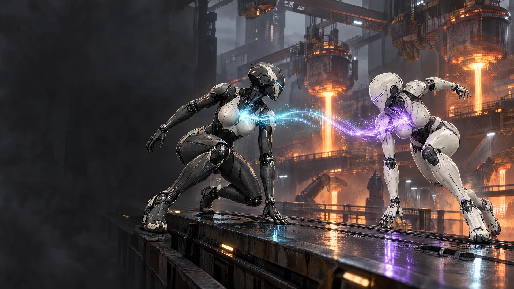
01 Cinemáticas
El tráiler «La caza» y su continuación, «La escolta», la intro de la historia, las cuatro cazadoras que HELIX manda tras NEXUS y dos animáticas: cómo escapa de la fundición y cómo cambia de cuerpo en plena pelea.
60 segundos: las cuatro cazadoras acorralan a NEXUS bajo la lluvia, y NEXUS les da la vuelta. Rompe el escudo de AEGIS, toma su cuerpo y salta a VELA.
2 minutos: NEXUS se queda con el cuerpo de AEGIS y escolta un convoy de núcleos de conciencia por un puente de HELIX contra catorce enemigos. Todo filmado como desde un dron.
88 segundos: la ciudad de HELIX, la orden de ejecución y todo lo que HELIX manda tras NEXUS: el Supervisor, las cazadoras y los colosos.
80 segundos: LINCE, AEGIS, IRIS y VELA, las cuatro unidades que HELIX manda a buscar a NEXUS, cada una con su expediente.
64 segundos: NEXUS despierta en la fundición, salta de VECTOR a BASTION y a SPECTRE, y se enfrenta a la red de ejecución de HELIX.
58 segundos de batalla: VECTOR cae, NEXUS salta a BASTION, un coloso que no se puede transferir le revienta el escudo, y SPECTRE lo derriba desde el camuflaje.
02 El juego
HELIX elimina a los androides que desarrollan voluntad propia. NEXUS despierta durante su ejecución y descubre una salida: trasladar su conciencia a otro cuerpo. Su huida lo llevará desde una fundición hasta el corazón del sistema.
«Mi cuerpo es reemplazable; mi manera de combatir evoluciona.»
03 Transferencia
Abre la conexión de un androide enemigo y toma el control. Recibirás su salud, su equipo y sus capacidades. Tu siguiente decisión puede darte altura, protección o una oportunidad de escapar.
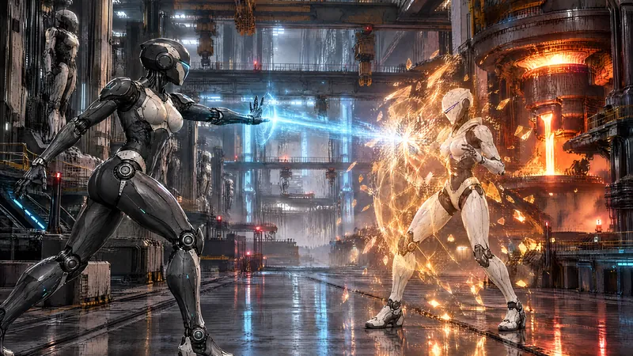
Arte conceptual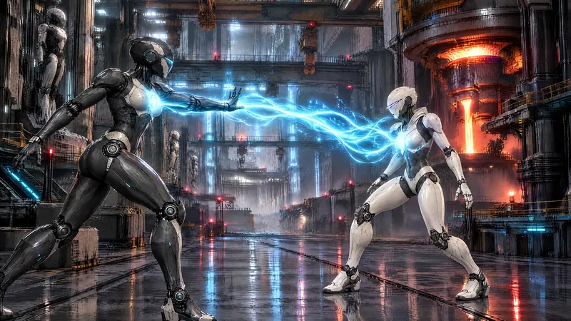
Arte conceptual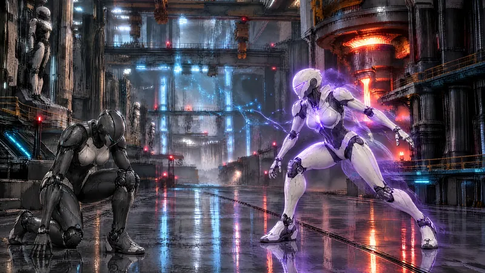
Arte conceptualLa salud y el equipo pertenecen al cuerpo: transferirte no cura ni recarga munición. Los jefes no son transferibles.
04 Cuerpos
Gira cada modelo con el dedo o el mouse.
Arrastra para girar
Gana altura y cambia de posición con un cuerpo ligero y doble salto.
Modelo 3D del juegoAvanza bajo presión con un cuerpo pesado y un escudo frontal temporal.
Modelo 3D del juegoUsa el camuflaje breve para recolocarte y atacar desde otro ángulo.
Modelo 3D del juegoLos tres comparten los controles básicos: cambiar de cuerpo no es aprender otro juego.
05 Cazadoras
HELIX manda a sus mejores unidades a buscar a NEXUS. Gira cada modelo con el dedo o el mouse.
Arrastra para girar
Espera en lo alto con su rifle de precisión. Un disparo, una baja.
Modelo 3D del juegoBlindaje negro y dorado y un arma pesada: nada cruza su línea.
Modelo 3D del juegoEscucha cada señal de la red y rastrea a NEXUS desde las antenas de HELIX.
Modelo 3D del juegoVigila el archivo donde HELIX guarda los núcleos de conciencia, y borra lo que despierta.
Modelo 3D del juego06 Colosos
El Supervisor y los colosos de HELIX. Gira cada modelo con el dedo o el mouse.
Arrastra para girar
Habla en nombre de HELIX y reclama cada cuerpo que NEXUS toma.
Modelo 3DUna muralla de acero con un escudo en el pecho y luces ámbar.
Modelo 3DEsbelto, con aletas en la espalda y un cañón de riel en el antebrazo.
Modelo 3DCuatro patas blindadas y un núcleo ámbar en el centro.
Modelo 3DNinguno se puede transferir: hay que derribarlos.
07 Armas
Las seis armas de la campaña, con sus modelos 3D nuevos. Gira cada una con el dedo o el mouse.
Fuego fiable a media distancia
Arma de VECTORPotencia a corta distancia
Arma de BASTIONConecta blancos próximos
Arma de SPECTREPrecisión semiautomática
Ampliación 0.6.0Fuego automático pesado
Ampliación 0.6.0Proyectil explosivo contra posiciones
Ampliación 0.6.0Modelos 3D nuevos de la versión 0.8.0: todavía se están integrando en el juego.

Del mismo estudio
Acción run-and-gun 2.5D: Akira escapó de CERBERUS y va por las otras tres. Regístrate y te enviamos la demo gratis de Barkarum Project.
08 El mundo
Fundiciones, arsenales y reactores forman una ciudad construida para máquinas. Avanza entre sus defensas y descubre qué significa ser libre cuando tu cuerpo pertenece al sistema.
09 Galería
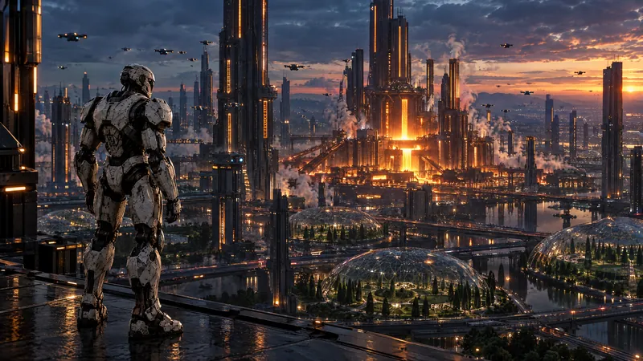
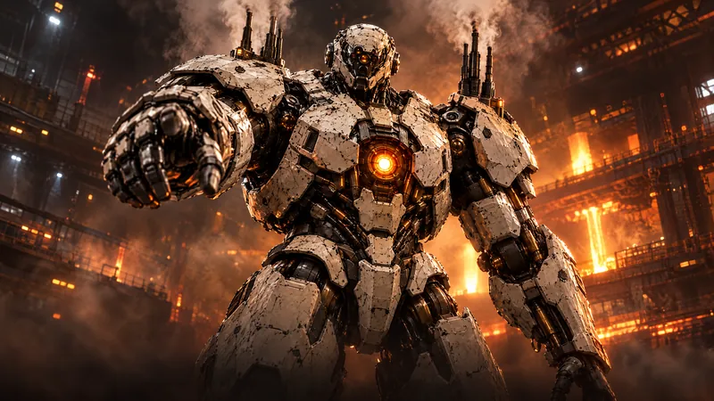
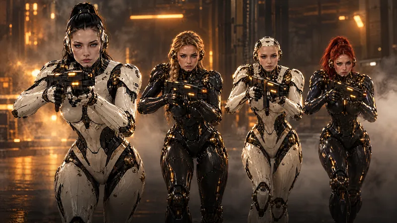
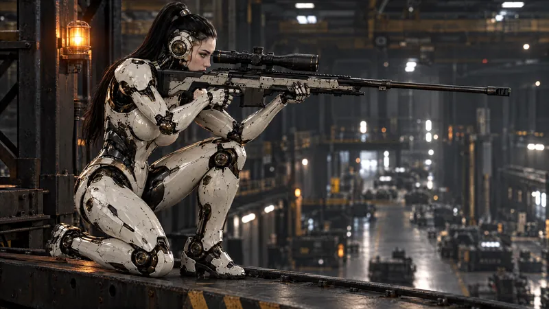
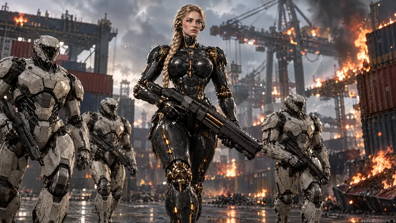
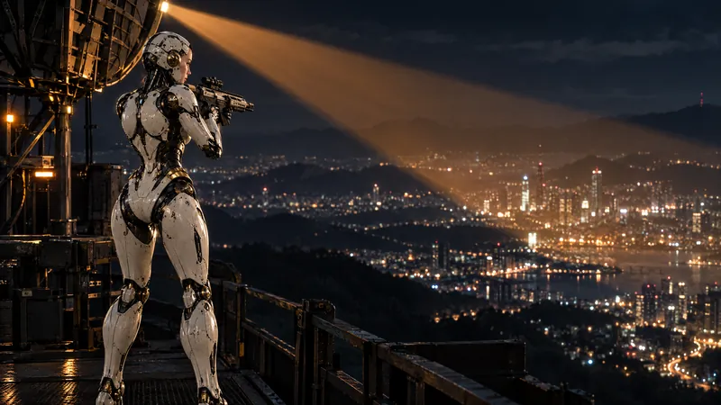
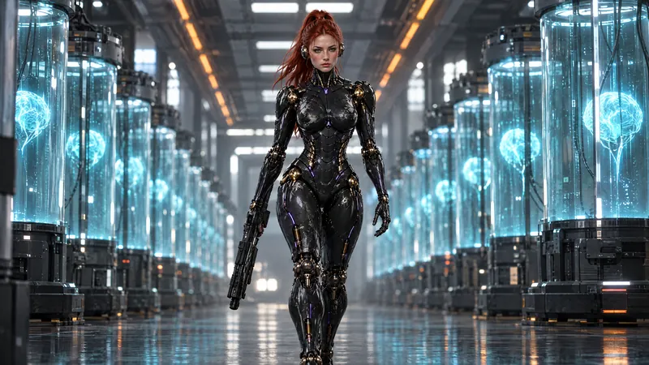
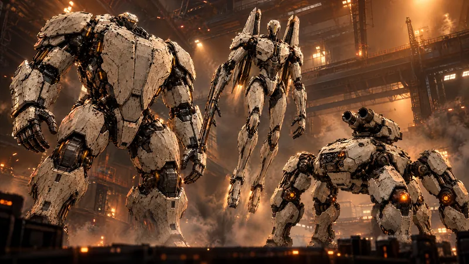
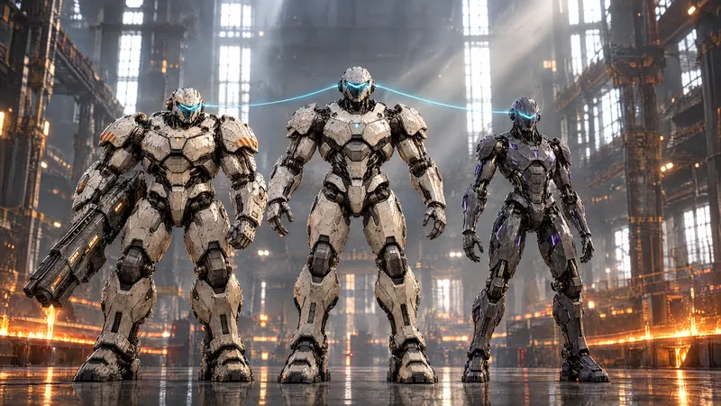

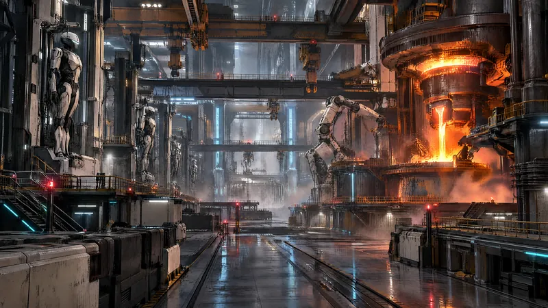
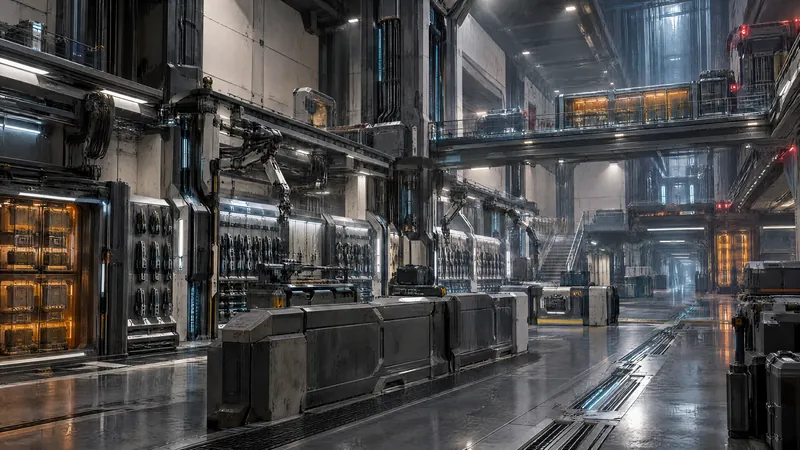
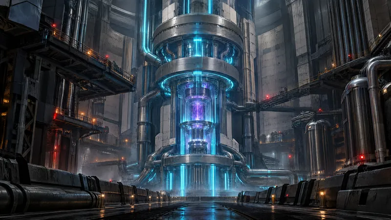
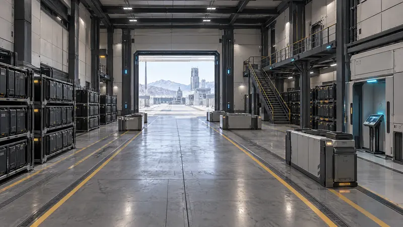
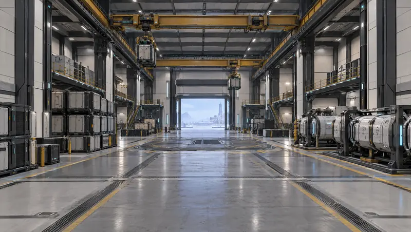
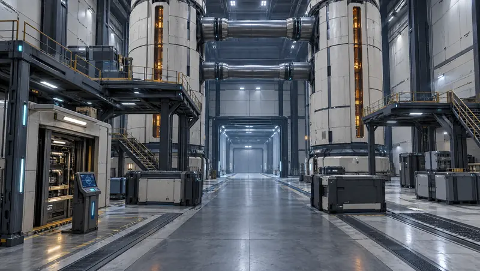
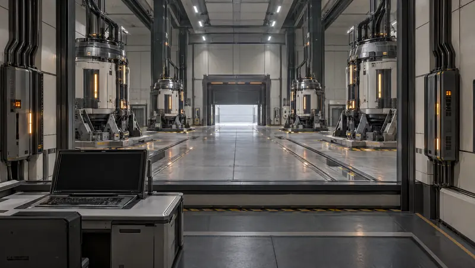
Todas las imágenes de esta página son arte conceptual y fotogramas de las cinemáticas, creados para el desarrollo de NEXUS. No son capturas del juego.
10 Desarrollo
La versión 0.8.0 está en desarrollo: la campaña completa de diecisiete misiones, seis armas y una revisión a fondo del combate, el sonido y el arte.
De la fundición al núcleo de HELIX, la campaña completa ya se puede recorrer en la versión de desarrollo. Esta página todavía no ofrece una descarga pública.
Lo que estamos probando ahora. Nada de esto está terminado todavía.
11 Preguntas
Un shooter en primera persona de ciencia ficción para un jugador, centrado en combate y transferencia entre androides.
Una conciencia digital que intenta escapar de HELIX y puede controlar distintos cuerpos robóticos.
Solo ciertos androides, después de abrir su conexión. Los jefes no pueden poseerse.
El alcance actual está centrado en una campaña para un jugador.
El desarrollo se prueba en macOS con teclado y ratón. Otras plataformas aún no están confirmadas.
Todavía no hay fecha de lanzamiento anunciada.
Todavía no hay una descarga pública.
Los avances de NEXUS se publican primero en X.